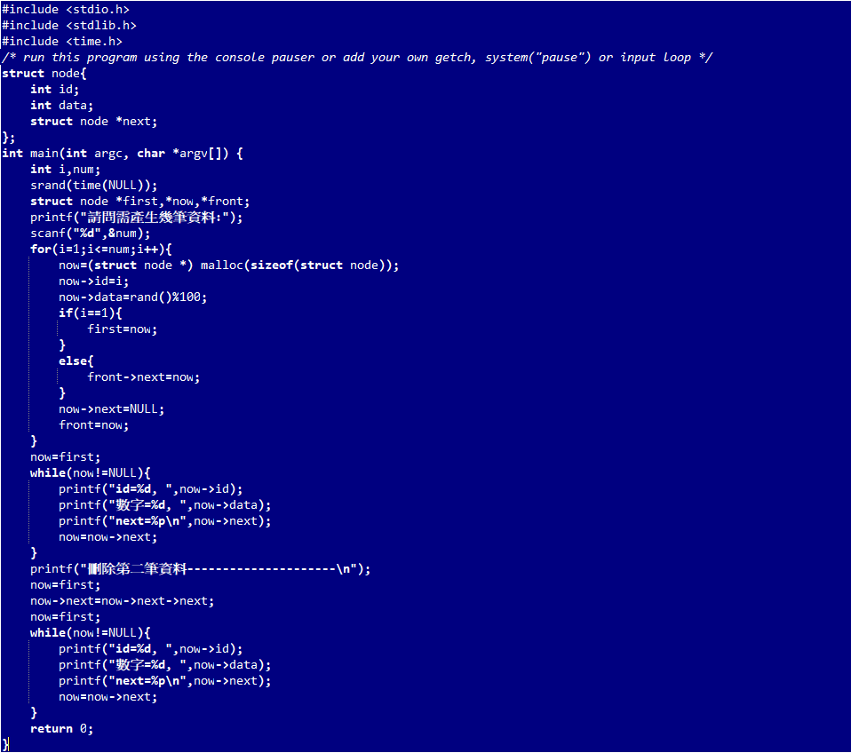

結構陣列介紹
有些資料會有相關性，相關聯的資料組織在一起，對於資料本身的可用性或者是程式碼的可讀性，都會有所幫助，例如，在程式中你可能發現，在進行帳戶之 類的處理時，帳號、名稱、餘額這三個資料總是一併出現的，這時可以將它們組織在一起，定義為結構結構的名稱型態包含 struct 這個名稱，因此建立實例時， 會需要是 struct Account acct 的形式，為了方便起見，可以使用 typedef 定義結構的別名，如此一來，宣告並產生實例時，就不用再寫 struct 關鍵字。
程式範例
結構範例 
實作
經過上述的講解可能大家還是不太懂，讓我們直接進入實作階段。
範例下載1 練習1